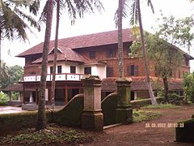

Parambikulam Tiger Reserve, which also includes the erstwhile Parambikulam Wildlife Sanctuary, is a 391 square kilometres (151.0 sq mi) protected area in Kollengode Block, Chittur taluk in Palakkad district of Kerala state, South India. The wildlife sanctuary, which had an area of 285 square kilometres (110 sq mi) was established in 1973. It is in the Sungam range of hills between the Anaimalai Hills and Nelliampathy Hills. Parambikulam Wildlife Sanctuary was declared as part of the Parambikulam Tiger Reserve on 19 February 2010.Including the buffer zone, the tiger reserve has a span of 643.66 km2. The sanctuary is the home of four different tribes of indigenous peoples including the Kadar, Malasar, Muduvar and Mala Malasar settled in six colonies. Parambikulam Tiger Reserve implements the Participatory Forest Management Scheme (PFMS).
Silent Valley National Park
Silent Valley National Park, is a national park in Kerala, India. It is located in the Nilgiri hills, has a core area of 89.52 km², which is surrounded by a buffer zone of 148 km². This national park has some rare species of flora and fauna. This area was explored in 1847 by the botanist Robert Wight. The national park is one of the last undisturbed tracts of South Western Ghats mountain rain forests and tropical moist evergreen forest in India. Contiguous with the proposed Karimpuzha National Park to the north and Mukurthi National Park to the north-east, it is the core of the Nilgiri Biosphere Reserve, and is part of the Nilgiri Sub-Cluster, Western Ghats World Heritage Site, recognised by UNESCO in 2007

Varikkasseri Mana
Varikkasseri Mana, alternatively known as Varikkumanchery Mana, is one of the oldest traditional aristocratic Namboothiri family houses in Kerala. Built in Kerala architectural style on a plot of land measuring approximately 4 acres, the building is located at Manissery, a village in Ottapalam in Palakkad. It is a popular shooting location for Malayalam films and several commercially successful films such as Devasuram, Aaraam Thampuran, Rappakal were filmed on its premises. , alternatively known as Varikkumanchery Mana, is one of the oldest traditional aristocratic Namboothiri family houses in Kerala. Built in Kerala architectural style on a plot of land measuring approximately 4 acres, the building is located at Manissery, a village in Ottapalam in Palakkad.